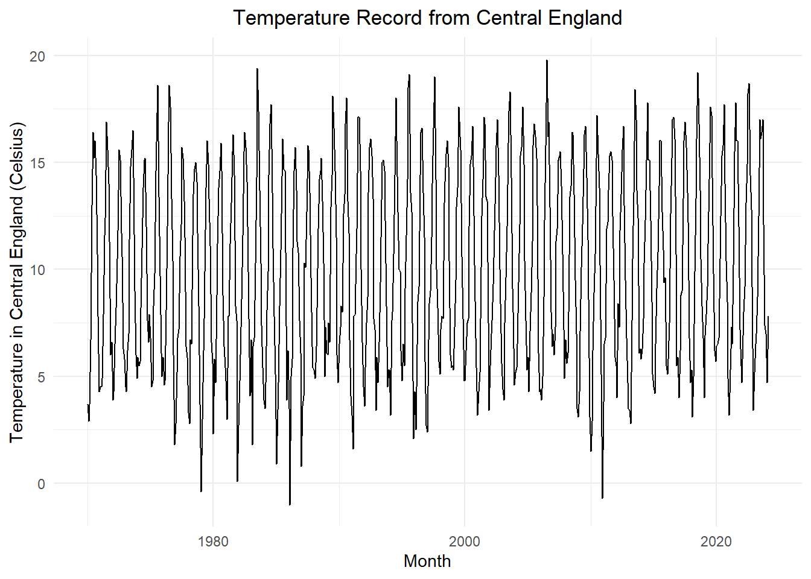
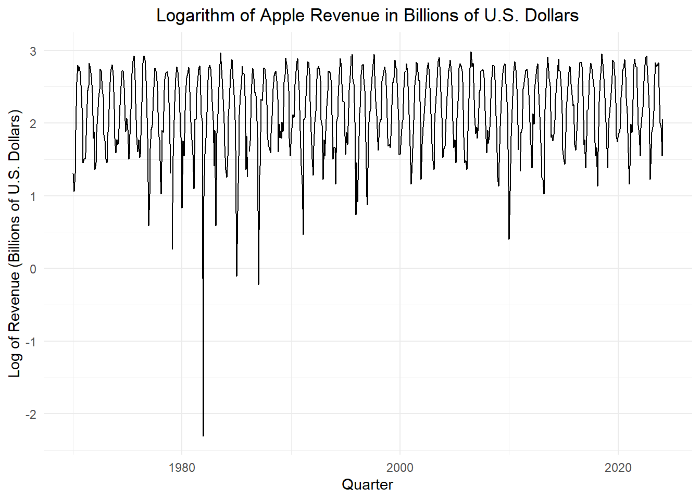

temp_eng_ts <- rio::import("data/temperature_england.csv") |>
dplyr::select(-comments) |>
pivot_longer(cols = c(-Year), names_to = "month_abbrev", values_to = "temp_c") |>
mutate(month = my(paste(month_abbrev, Year))) |>
filter(temp_c > -99.9 & Year >= 1970) |>
dplyr::select(month, temp_c) |>
as_tsibble(index = month)Transformations and Non-Linear Models
Chapter 5: Lesson 4
Learning Outcomes
Apply logarithmic transformations to time series
- Explain when to use a log-transformation
- Estimate a harmonic seasonal model using GLS with a log-transformed series
- Explain how to use logarithms to linearize certain non-linear trends
Apply non-linear models to time series
- Explain when to use non-linear models
- Simulate a time series with an exponential trend
- Fit a time series model with an exponential trend
Preparation
- Read Sections 5.7-5.8
Learning Journal Exchange (10 min)
Review another student’s journal
What would you add to your learning journal after reading another student’s?
What would you recommend the other student add to their learning journal?
Sign the Learning Journal review sheet for your peer
Temperature - England
temp_eng_ts |>
autoplot(.vars = temp_c) +
labs(
x = "Month",
y = "Temperature in Central England (Celsius)",
title = "Temperature Record from Central England"
) +
theme_minimal() +
theme(plot.title = element_text(hjust = 0.5))
temp_eng_ts |>
autoplot(.vars = log(temp_c)) +
labs(
x = "Quarter",
y = "Log of Revenue (Billions of U.S. Dollars)",
title = "Logarithm of Apple Revenue in Billions of U.S. Dollars"
) +
theme_minimal() +
theme(plot.title = element_text(hjust = 0.5))Warning in log(temp_c): NaNs produced